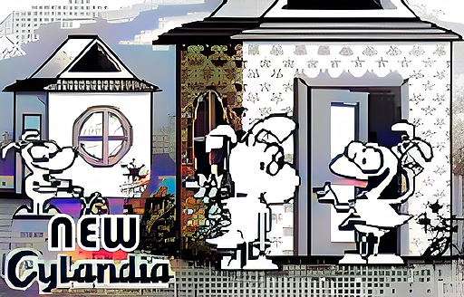
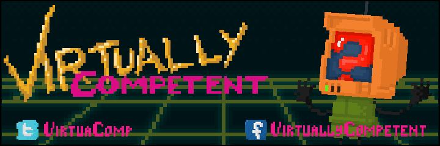
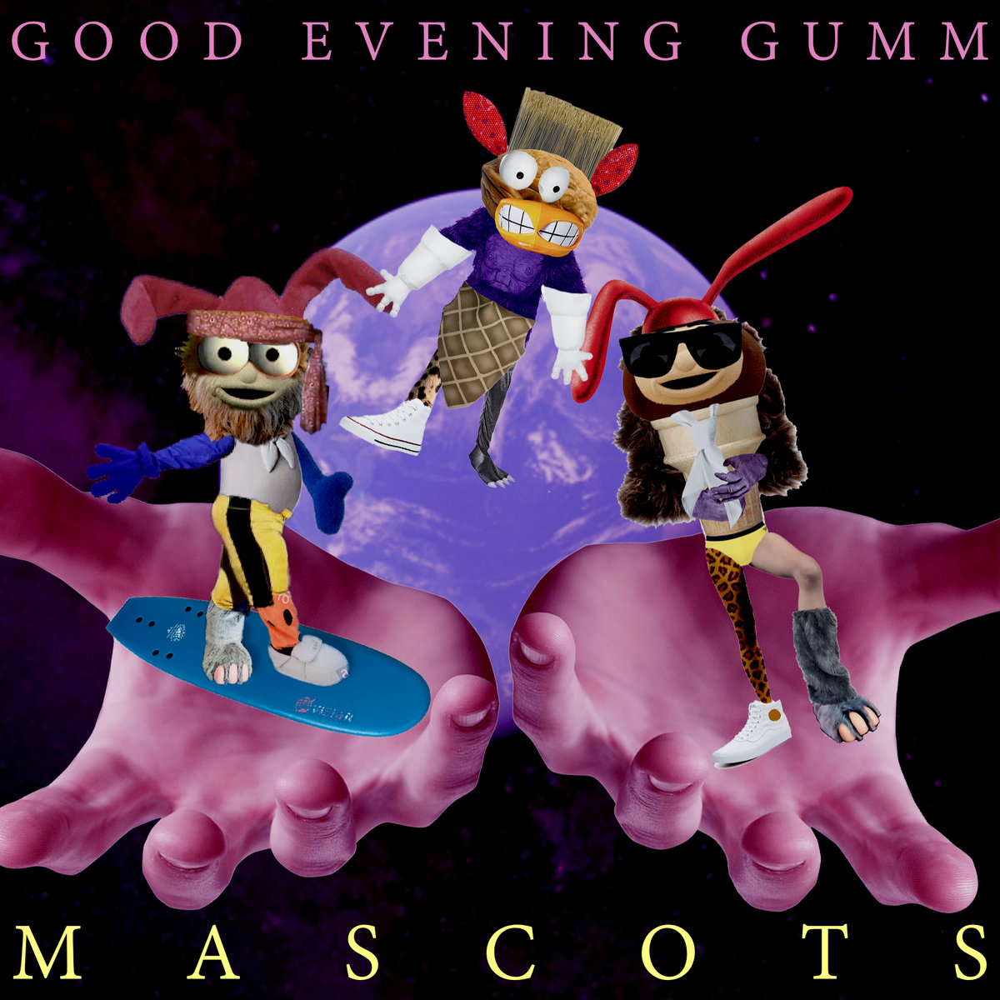

works
gamedev
NEW CYLANDIA (2022-present)
a small collective of creative folks that i like to collaborate with frequently
my professional era (2021-2024)
i previously worked at studios like Funomena (doing Roblox dev), No Goblin (Unreal dev), and Astra Logical (QA on titles like Snakebird Complete and Arranger) in a full-time capacity.
prior to returning to non-games work, i did some contract work for Studio Any Percent (working on Luxe Engine and Mossfield Origins) and Draknek & Friends (Godot dev). i also occasionally mentor students at Code Coven and most recently, i showed my game Dreamscape Explorer at NYU Game Center's No Quarter exhibition
Virtually Competent (2013-2018)
co-founded with Clover Greenhalgh, V-Comp was my first time making games and actually releasing them
music
good evening gumm
i released 4 albums with Hubol Persson-Gordon and Lottie Gumm as Good Evening Gumm. i recommend MASCOTS as a good entry point, especially if you have a foot fetish
personal stuff
fyi i don't actually know how to play any instruments. listener beware
podcasts
Oral Gex
a play-along podcast i hosted with my very smart (too smart to be attached to this, arguably) friend Emilia Lazer-Walker
guest appearances
presentations
A Little Presentation Called Mario
Experimental Game Workshop, GDC 2023

my talk starts around an hour and 25 minutes in, but you should watch the whole thing tbh. lots of cool ppl doing cool stuff
A Beginner's Guide to Gex
i presented this microtalk to my colleagues at Funomena, a mere month before the company was shut down and all staff were laid off